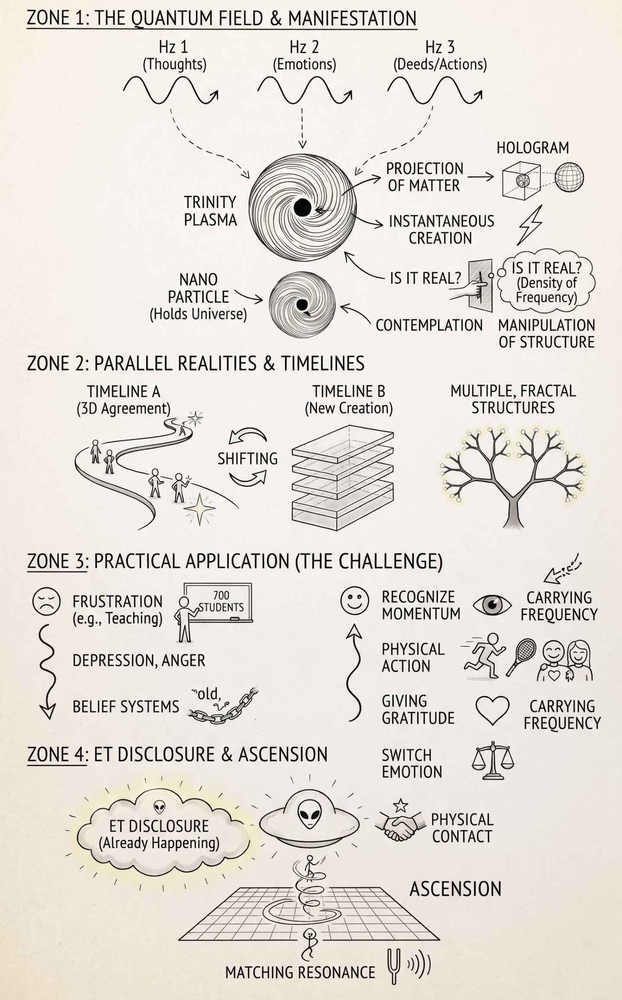
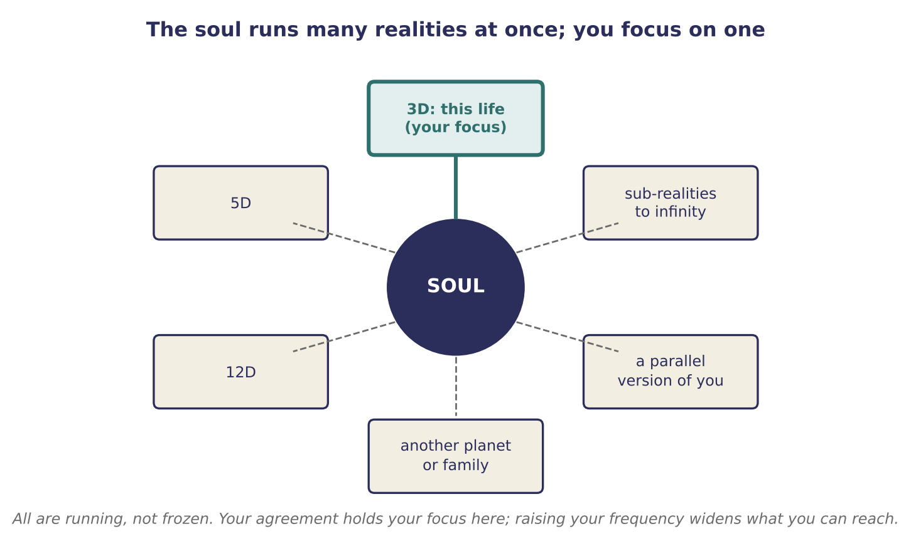

Q & A: The Soul, Letting Go and Disclosure
What the soul is, many realities at once, letting go of old beliefs and past pain, and switching emotion under pressure (live Q&A)

Key teachings
6.1The next level: let go of everything old
New guidance describes a new way of living together, a "new society" built on giving and sharing. It is said to come from the Council of Nine and a newly introduced, very advanced and ancient group. Seeing that reality takes the same mechanics as always: be the abundance you want to see (see 4.3), and crystallize it moment to moment with thought, emotion and deed together (see 1.2–1.3).
The challenge is that it asks you to let go of your belief systems, almost everything you were taught. And you may be tested without knowing it, usually on how you treat and interact with people (see 5.7).
6.2What the soul is
Seen through the structure, the soul is an energetic force like a plasma. Depending on its frequency of vibration it creates matter (see 4.1). A thought is a waveform of frequency; it forms geometric patterns, and together these become like a plasma seed, a particle that can hold the whole universe or the smallest thing (see 5.9). From it you can create anything, and a thought prints itself instantly in front of you, like a hologram.
What feels solid is only density of frequency. In principle, someone who can change that structure could pass through it; the session mentions people said to walk through walls. Mentalists also manipulate the structure of the mind to create a reality for someone. The rule: do this only with the other person's permission.
6.3The soul keeps growing — and it is not linear
Each thing you create shifts you into another reality, then another, a ripple effect without end. Every universe holds universes within it, down to sub-atomic realities.
The soul is always "advanced", because everything runs at once. What you do builds new structures of reality that flow back into the soul, the over-soul, the god particle (see 1.1). Consciousness is always growing through new experience, and it collects every parallel reality. It never stops. None of this is linear; it is multiple and fractal: you are not moving, you are shifting (see 1.2).
6.4Many realities at once, one focus
Your soul runs in 3D, 5D, 12D and countless other realities at the same time, and none of them are frozen. You see only 3D because, by agreement, you are holding your focus here. The session uses the film Avatar as a picture: a consciousness focused in one body somewhere else, but done without technology.
Holding many at once is like multitasking; at higher levels you receive information instantly. Telepathy works above this timeline, which is why it isn't physical. Contact experiences work the same way: you can be on a spacecraft for two days and be returned, but to a new reality you have created, not the old one. The next level being taught is to raise the body's frequency so you can hold that higher vibration for longer.

6.5Lessons come by levels — and you change yourself
No one may tell you your agreement. By law it stays between you, your guidance and the groups you are connected with; at most a hint is given. You live it through.
Challenges come by levels. A challenge in daily life is a lesson in the hologram: pass it with the best of your abilities and you crystallize a positive outcome. If you don't, it repeats, because you keep sending the same vibration, until you let go 100% (see 1.5, Q8). For example, once you truly let go of the money system and give from the heart, abundance arrives through your own structure (see Section 4).
It doesn't matter what anyone else does. You don't change others; you change yourself, shift into a different reality, and "print" everyone else into it. Think of a radio: you can't hear a station unless you tune to its frequency. Your guidance channels open as you pass lessons and understand the structure; once you know it, nothing new sounds crazy, it is just physics.
6.6Letting go of old beliefs and past pain
Your subconscious is already connected with everything and knows everything; you only have to tap into it. You don't have to keep tuning into a reality where something negative happened.
Carrying a past hurt, or a belief like shame or self-judgment from childhood, means you keep projecting that vibration into each new reality, and your timeline follows it. Building it up this way is what creates karma and negative outcomes (see 3.2). Forgiveness is letting go of it, whatever someone did, so you stop carrying that frequency into your new now. From this moment you are at zero, clean, in a new reality (see 2.7).
The practice: in meditation, replace the painful experience with a positive version, and hold that new picture as what happened to you. Because all realities run at once, you are not pretending; you are shifting your timeline, and you stop projecting the negative structure.
A note of balance: for serious trauma, this practice can sit alongside support from a qualified therapist or counsellor, in the same spirit as checking your body (3.7).
6.7Switching emotion under pressure
Controlling and switching your emotion is "the most challenging thing for every single person", and the most important. When a day wears you down:
Give gratitude for why you are there; for a teacher, being there to help the children. After work, do something completely different that you enjoy, such as sport or going out with friends, to balance it, so it doesn't build up into depression or shouting.
When you feel close to exploding, leave the scene before you react. Go somewhere calm and take in something that lifts you; the example is listening for a long time to a talk about switching realities, not to learn it but to let it bring the emotion back up. Physical action is the most powerful, because it pushes the shift harder. Then hold the positive. You won't know the outcome in advance, but staying positive switches you toward a positive one.
6.8Disclosure and the collapse of the old system
Disclosure is already happening, even if you don't see big spacecraft, and no exact dates are given; timing depends partly on governments. Some people already have physical contact but can't speak about it yet; information comes out at the right time for each person.
For new systems and technologies to arrive, the old system has to collapse: you cannot build a strong society on a corrupted foundation. The new society will come from how people interact with each other. Tragic events are seen, in this teaching, as agreements that help others wake up. The guidance: don't tune into fear-driven media, understand that this is a transition, and stay positive so you move onto the right timeline.
You don't need to die to move on; you create a new reality and continue, perhaps with technologies that keep you younger. Leave everything open to any probability, and know you are ascending. It comes down to matching resonance.
6.9Born on Earth, connected everywhere
Everyone born here is an earthling. But the soul runs in many realities, so while you live this Earth life, another part of your consciousness may be living as, for example, a Pleiadian, in other families on other planets, like the Avatar picture in 6.4.
A note for those who channel: say what you receive even when it doesn't make sense yet; it is often confirmed later.
The method — Switch and Release
For a heavy emotion in the moment, or an old belief or memory you keep carrying:
- Recognise the moment. Notice the drop, or the old story starting to replay.
- Pull out. "I am a hologram." If it's intense, leave the scene before you react.
- Move your body. Do something physical that calms and recharges you; it shifts you fastest.
- Gratitude for why you are here, and for what you have.
- Let go and forgive. "From this moment I am at zero." Stop carrying that frequency forward.
- Replace it. Picture the positive version and hold it as your own experience.
- Drop by drop. Repeat it daily, like filling a cup one drop at a time, until it crystallizes.